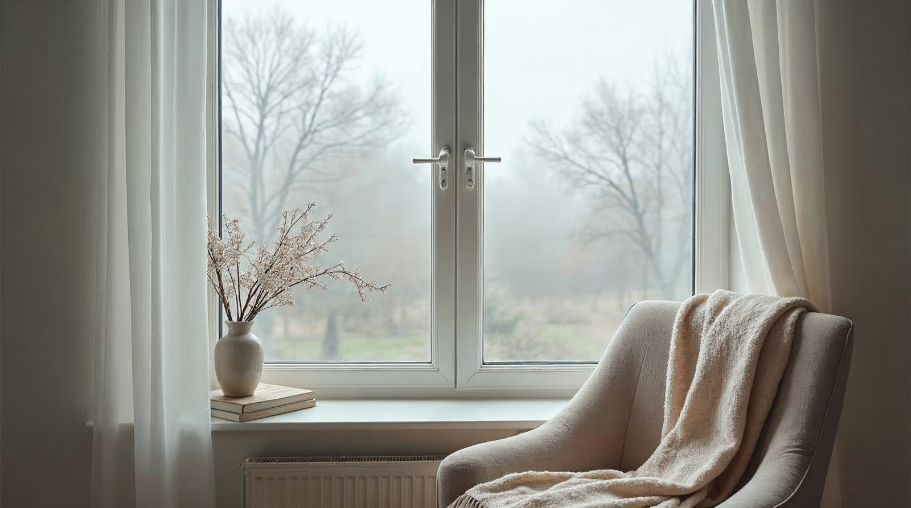
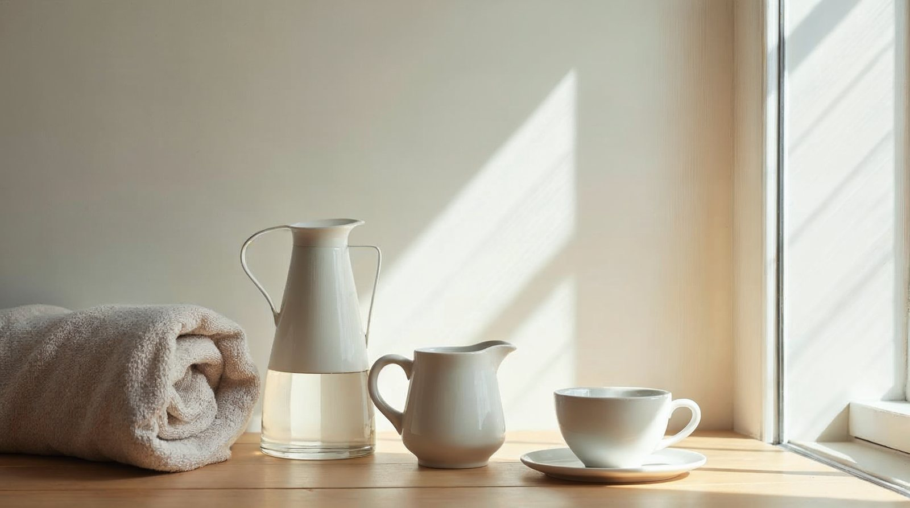
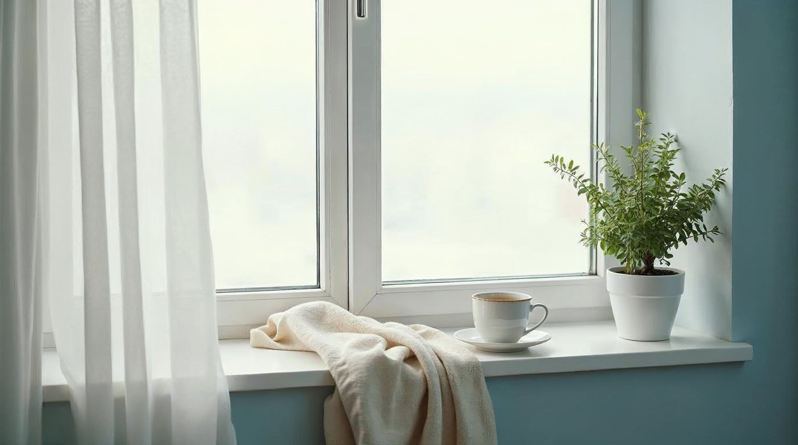
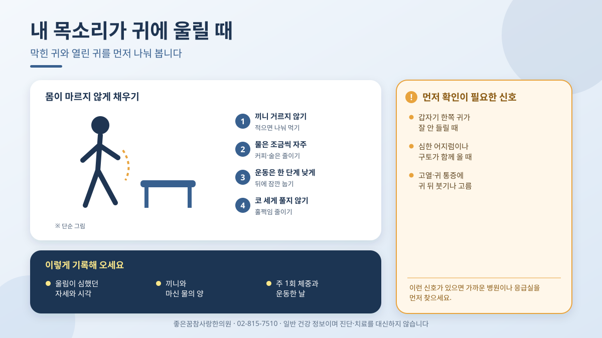

이종호 한의사 감수좋은꿈참사랑한의원 대표원장 (한의사 면허번호 19769)발행 2026-11-26 · 수정 2026-11-27
이 글의 차례
회의 시간에 발표를 시작했는데, 내 목소리가 귀 안에서 웅웅 울려요. 마치 머리를 통 안에 넣고 말하는 것처럼 내 목소리만 크게 들리고, 숨을 쉴 때마다 쉭쉭 하는 소리까지 귀에 들어오죠. 잠깐 고개를 숙였더니 언제 그랬냐는 듯 잠잠해져서 더 이상하게 느껴집니다.
이렇게 내 목소리나 숨소리가 귀 안에서 크게 울리는 증상을 자가강청이라고 부르고, 그 이유 가운데 하나가 이관개방증이에요. 귀와 코 뒤쪽을 잇는 이관이라는 통로가 평소에는 닫혀 있어야 하는데, 열린 채로 지내는 시간이 길어지면서 생기는 불편이거든요.
진료실에서 이관개방증을 말씀하시는 분들은 귀가 먹먹하다는 표현을 많이 쓰세요. 그래서 귀가 막힌 줄 알고 코를 막고 세게 불어 보거나 하품을 반복하는 분이 많은데, 이관개방증에서는 이런 방법이 오히려 불편을 키우기도 해요. 그러니까 사실은 '막힌 것'과 '열린 것'은 느낌은 비슷해도 두 개가 다른 얘기예요. 그래서 둘을 나눠 보는 일이 중요한 거예요.
증상이 오르내리는 모습도 꽤 독특해요. 서 있거나 운동한 뒤에 심해지고, 누우면 덜해지거든요. 이상한 병에 걸린 게 아닐까 겁내시는 분도 계신데, 이 흐름 자체가 살펴볼 실마리가 돼요. 저는 이 흐름과 함께, 최근 체중이 줄었는지, 몸이 마르고 지친 시기인지를 먼저 여쭤요.
이관은 어떤 일을 하나요?
이관은 가운데귀와 코 뒤쪽을 잇는 가느다란 통로입니다. 평소에는 닫혀 있다가 침을 삼키거나 하품할 때 잠깐 열려 귀 안쪽 압력을 바깥과 맞춰 줍니다. 비행기나 엘리베이터에서 귀가 먹먹할 때 침을 삼키면 뻥 뚫리는 것이 바로 이 통로가 열리는 순간입니다.
이관이 닫혀 있는 동안에는 내 목소리와 숨소리가 귀로 바로 전해지지 않습니다. 그런데 이관이 열린 채로 있으면 코와 목에서 나는 소리가 통로를 타고 귀로 곧장 전해져 크게 울리게 됩니다. 숨을 쉴 때마다 고막이 함께 움직여 바스락거리는 느낌이 들기도 합니다.
반대로 이관이 잘 열리지 않아 막혀 있는 상태도 있습니다. 감기나 비염 뒤에 귀가 꽉 막히고 소리가 멀게 들리며, 침을 삼켜도 잘 뚫리지 않는 경우입니다. 두 상태 모두 귀가 먹먹하다는 말로 표현되지만 살펴볼 방향은 반대에 가깝습니다.
왜 이관이 열린 채로 있게 될까요
이관 주변에는 지방과 부드러운 조직이 있어 통로가 자연스럽게 닫힌 상태를 유지하도록 돕습니다. 이 조직이 줄어들거나 통로를 여닫는 근육의 균형이 흐트러지면 이관이 쉽게 열린 채로 남게 됩니다. 진료실에서 흔히 확인하는 이유는 이렇습니다.
- 짧은 기간에 체중이 많이 줄어든 경우
- 식사량이 줄고 몸이 마르며 지친 시기
- 땀을 많이 흘리거나 물을 적게 마셔 몸이 마른 경우
- 운동 직후처럼 몸이 데워지고 숨이 가쁜 때
- 임신 중이나 호르몬 변화가 큰 시기
- 코를 자주 세게 풀거나 훌쩍이는 습관
- 오래 이어진 긴장과 피로
체중 감소는 가장 자주 겹치는 이유입니다. 다이어트로 살을 많이 뺀 뒤, 또는 큰 병을 앓고 몸무게가 줄어든 뒤에 시작되었다고 말씀하시는 분이 많습니다. 이관 주변 조직도 함께 줄어 통로가 헐거워지는 것으로 이해되고 있습니다.
한의학에서는 몸의 진액이 부족하고 기운이 허해져 통로를 단단히 여닫는 힘이 약해졌다고 표현하기도 합니다. 진찰에서 쓰는 전통적인 설명 방식이며, 이비인후과 검사와 체중, 생활의 흐름을 함께 놓고 판단합니다.
이관이 막혔을 때와 어떻게 다른가요?
이관개방증은 내 목소리와 숨소리가 크게 울리는 것이 가장 큰 특징입니다. 서 있거나 앉아 있을 때 심하고, 눕거나 고개를 무릎 쪽으로 숙이면 금방 덜해집니다. 감기에 걸려 코가 막히면 오히려 편해졌다고 말씀하시는 분도 계십니다.
이관이 막힌 경우에는 귀가 꽉 찬 듯하고 바깥 소리가 멀게 들립니다. 자세를 바꿔도 크게 달라지지 않고, 감기나 비염이 심할 때 더 불편합니다. 침을 삼키거나 하품하면 잠깐 뚫렸다가 다시 막히는 흐름을 보이기도 합니다.
귀 먹먹함과 함께 빙빙 도는 어지럼이 몇 시간씩 오고 귀울림이 커진다면 메니에르병 같은 귀 안쪽 문제를 생각해 봅니다. 귀에서 심장 박동처럼 쿵쿵 울리는 소리가 들린다면 혈관 쪽을 확인해 보는 것이 좋습니다. 이런 경우는 이비인후과 진료로 먼저 나눠 보시길 권합니다.
두 상태가 번갈아 나타나는 분도 계십니다. 그래서 스스로 판단해 코를 세게 불거나 이관을 뚫는 기구를 쓰기보다, 이비인후과에서 고막의 움직임과 이관 상태를 확인받은 뒤 생활 관리를 시작하시는 것이 안전합니다.
체중이 줄었을 때 함께 챙길 것
이관개방증이 살이 빠진 뒤에 시작되었다면, 체중이 왜 줄었는지를 먼저 살펴봐야 합니다. 일부러 다이어트를 해서 줄었다면 식사량과 속도를 되돌아보고, 일부러 빼지 않았는데 줄었다면 내과에서 원인을 먼저 확인받는 것이 좋습니다.
급하게 뺀 체중을 다시 늘리라는 뜻은 아닙니다. 끼니를 거르지 않고 단백질과 지방이 고르게 들어간 식사를 이어 가면서, 몸이 지나치게 마른 상태에서 조금 벗어나도록 돕는 쪽입니다. 식사량이 적은 분은 한 번에 많이 드시기보다 하루 다섯 번 정도 나눠 드시는 방법을 권합니다.
운동을 열심히 하시는 분은 운동 직후 증상이 심해지는 경우가 많습니다. 운동 강도를 조금 낮추고, 운동 중과 뒤에 물을 충분히 드셔 보세요. 운동이 끝난 뒤 잠깐 누워 쉬는 것만으로 울림이 가라앉는 데 도움이 될 수 있습니다.
증상이 심할 때 잠깐 쓸 수 있는 요령
이관개방증이 있는 분들은 저마다 증상을 잠깐 덜어 주는 요령을 찾아 쓰십니다. 몇 가지를 정리해 드리면 이렇습니다. 모두 잠깐 불편을 덜어 주는 방법이며, 상태를 확인하는 일을 대신하지는 않습니다.
- 고개를 무릎 쪽으로 숙이거나 잠깐 눕기
- 코를 살짝 훌쩍이기보다 코로 천천히 숨 쉬기
- 미지근한 물을 한 모금씩 자주 마시기
- 말을 할 때 목소리를 조금 낮추고 천천히 말하기
코를 세게 들이마시는 훌쩍임은 순간적으로 귀가 편해지는 느낌을 주지만, 자꾸 반복하면 귀 안쪽 압력이 흔들려 다른 불편이 생길 수 있습니다. 습관처럼 훌쩍이고 계셨다면 조금씩 줄여 보세요.

계절과 시기에 따라 달라지는 모습
여름에는 땀을 많이 흘려 몸이 마르기 쉽고, 더위에 입맛이 떨어져 끼니를 거르는 날이 늘어납니다. 이 시기에 울림이 부쩍 심해졌다고 말씀하시는 분이 많습니다. 외출할 때 물병을 챙기고, 더운 날 운동은 해가 진 뒤로 옮겨 보세요.
겨울에는 난방으로 실내가 건조해지고 물을 덜 마시게 됩니다. 목이 마르지 않아도 물을 챙겨 드시고, 실내 습도를 조금 높여 두시길 권합니다. 따뜻한 차를 드신다면 카페인이 적은 것으로 고르는 편이 좋습니다.
시험이나 마감처럼 바쁜 시기에는 끼니를 거르고 잠이 짧아지면서 체중이 조금씩 빠지기 쉽습니다. 이런 시기에 증상이 시작되었다면, 일이 지나간 뒤 식사와 잠을 먼저 되돌려 놓는 것이 실마리가 될 수 있습니다.
집에서 해 볼 수 있는 간단한 자기 점검
일주일 정도 아래 질문에 답해 보시면 어느 쪽에 가까운지 보이기 시작합니다.
- 내 목소리와 숨소리가 귀 안에서 울리나요?
- 눕거나 고개를 숙이면 덜해지나요?
- 운동 뒤, 땀을 많이 흘린 뒤 더 심해지나요?
- 최근 몇 달 사이 체중이 줄었나요?
- 감기로 코가 막힐 때는 오히려 편한가요?
- 바깥 소리가 멀게 들리거나 어지럼이 함께 있나요?
증상이 심했던 상황과 자세를 짧게 적어 두세요. 서 있을 때였는지, 운동 직후였는지, 말을 많이 한 뒤였는지에 따라 생활에서 조절해 볼 부분이 보이기 시작합니다.
먼저 이렇게 여쭙니다
처음 오시면 저는 대략 이런 순서로 여쭙니다. 미리 떠올려 오시면 이야기가 훨씬 수월해집니다.
- 내 목소리가 울리기 시작한 것은 언제부터, 어떤 계기였나요?
- 이비인후과에서 고막과 청력 검사를 받으셨나요?
- 자세에 따라, 운동 전후로 증상이 어떻게 달라지나요?
- 최근 몇 달 사이 체중 변화와 식사량은 어떠신가요?
- 하루에 물은 얼마나, 커피와 술은 어느 정도 드시나요?
- 잠과 피로, 긴장의 흐름은 요즘 어떠신가요?
이비인후과에서 받은 검사 결과지나 약이 있다면 함께 가져와 주세요. 임신 중이시라면 먼저 알려 주세요. 임신 중에는 이관개방 증상이 생겼다가 출산 뒤 가라앉는 경우도 있어서, 산부인과와 상의하면서 살펴봅니다.
일상에서 먼저 해 볼 수 있는 것
이관개방증은 몸이 마르고 지친 상태에서 벗어나도록 돕는 생활이 바탕이 됩니다. 아래 가운데 하나만 골라 2주 정도 이어 가 보세요.
- 끼니를 거르지 않고, 양이 적다면 하루 다섯 번 나눠 먹기
- 물은 목마르기 전에 조금씩 자주 마시기
- 운동 강도를 조금 낮추고 운동 뒤 잠깐 누워 쉬기
- 코를 세게 풀거나 훌쩍이는 습관 줄이기
- 커피와 술은 줄여 몸이 마르지 않게 하기
- 잠드는 시각과 깨는 시각을 일정하게 맞추기
커피와 술은 소변을 늘려 몸을 마르게 할 수 있습니다. 증상이 심한 시기에는 커피를 하루 한 잔 이내로 줄이고, 마신 만큼 물을 더 드셔 보세요.
말을 많이 하는 일을 하시는 분은 쉬는 시간마다 물을 한 모금 마시고, 목소리를 조금 낮춰 천천히 말해 보세요. 말을 빠르고 크게 이어 가면 숨이 가빠지고 울림이 더 커지기 쉽습니다.
목과 턱이 굳어 있으면 이관을 여닫는 근육의 균형에도 영향을 줄 수 있습니다. 하루 몇 번 어깨를 으쓱했다 툭 떨어뜨리고, 어금니를 살짝 떼어 턱의 힘을 빼 보세요. 긴장이 풀리면 울림도 덜 거슬리게 느껴질 수 있습니다.
한의원에서 함께 살필 수 있는 경우
- 이비인후과에서 이관개방 소견을 듣고 생활 관리가 필요한 경우
- 체중이 줄고 몸이 마른 뒤 귀 울림과 피로가 함께 이어지는 경우
- 식사량이 적고 소화가 약해 체중을 회복하기 어려운 경우
- 긴장과 피로가 이어지며 증상이 오르내리는 경우
- 목과 턱 주변이 늘 굳어 있고 귀 주변이 묵직한 경우
좋은꿈참사랑한의원에 오시면 먼저 아래 '먼저 확인이 필요한' 신호가 없는지부터 봅니다. 그다음 맥을 짚고, 식사량과 소화, 대소변, 잠과 피로의 흐름을 여쭙습니다. 목과 턱, 귀 주변 근육은 직접 만져 보며 굳은 자리를 확인합니다.
진찰한 내용을 바탕으로 생활에서 바꿔 볼 것 하나와 함께 침, 온열 관리, 한약 상담 가운데 지금 상태에 맞는 것을 정합니다. 한약을 상의할 때는 드시는 약을 모두 확인하고 신중하게 정합니다. 임신 중이시라면 먼저 알려 주시고 산부인과와 상의해 주세요.
이비인후과에서 받는 치료와 처방약은 그대로 이어 가시면서 함께 살핍니다. 한의원 진료는 이비인후과 진료를 대신하기보다, 그 곁에서 식사와 체중, 피로와 긴장처럼 몸 전체의 흐름을 함께 돌보는 것이라고 생각해 주시면 됩니다.

이렇게 기록해 오시면 상담이 쉬워집니다
이관개방증은 자세와 몸 상태에 따라 하루에도 여러 번 오르내립니다. 2주 정도 간단히 적어 오시면 흐름이 훨씬 잘 보입니다.
- 울림이 심했던 시각과 자세, 하던 일
- 0에서 10 사이 불편 점수
- 덜해졌던 자세나 요령
- 끼니 시각과 양, 마신 물의 양
- 운동한 날과 강도
- 주 1회 같은 시각에 잰 체중
기록을 나란히 놓고 보면 물을 적게 마신 날, 운동을 무리한 날, 끼니를 거른 날과 울림의 관계가 조금씩 드러납니다.

울림이 잦아들기까지
내 목소리가 귀에서 울리면 말을 하는 것 자체가 부담스러워지고, 대화를 피하게 되기도 해요. 충분히 그럴 수 있어요. 그래도 이야기를 나눠 보면 체중, 물, 운동, 피로처럼 손댈 수 있는 부분이 대개 하나쯤은 보이거든요.
마르고 지친 몸의 바탕을 살피는 건 제가 할게요. 대신 하나만 부탁드려요. 끼니를 거르지 말아 주세요. 많이 드시라는 게 아니에요. 때가 되면 한 끼씩 챙겨 드시는 것, 그거 하나예요. 딴 건 하시던 대로 편하게 하셔도 돼요.
다음에 오시면 2주 동안의 기록을 함께 펼쳐 놓고, 울림이 덜했던 날은 어떤 날이었는지부터 찾아볼게요. 궁금한 건 그냥 편하게 물어보세요.
이런 증상은 먼저 확인이 필요합니다
- 갑자기 한쪽 귀가 잘 안 들리면서 심한 어지럼이나 구토가 함께 오는 경우
- 귀가 심하게 아프고 고열이 나면서 귀 뒤가 붓거나 귀에서 고름이 나오는 경우
이런 신호가 있으면 한의원보다 가까운 병원이나 응급실을 먼저 찾으세요.
함께 읽으면 좋은 글
- 귀가 물 들어간 듯 먹먹하고 꽉 찬 이충만감이 오래갈 때는 무엇을 나눠 살피나요?
- 귀가 꽉 막힌 듯 먹먹하다가 빙빙 도는 어지럼이 몇 시간씩 오는 메니에르병은 어떻게 살피나요?
- 귀에서 소리가 들리는 이명이 있을 때는 어떤 점을 살펴보나요?
- 다이어트를 하지 않았는데 체중이 계속 줄 때는 어떤 검사부터 받고 무엇을 살피나요?
- 아무리 먹어도 살이 붙지 않는 마른 체질, 체중을 늘리려면 무엇부터 살피나요?

여쭙는 것
- 내 목소리가 울리기 시작한 것은 언제부터, 어떤 계기였나요?
- 이비인후과에서 고막과 청력 검사를 받으셨나요?
- 자세에 따라, 운동 전후로 증상이 어떻게 달라지나요?
생활에서 해 볼 것
- 끼니를 거르지 않고, 양이 적다면 하루 다섯 번 나눠 먹기
- 물은 목마르기 전에 조금씩 자주 마시기
- 운동 강도를 조금 낮추고 운동 뒤 잠깐 누워 쉬기
한의원에서 함께 살필 것
- 이비인후과에서 이관개방 소견을 듣고 생활 관리가 필요한 경우
- 체중이 줄고 몸이 마른 뒤 귀 울림과 피로가 함께 이어지는 경우
- 식사량이 적고 소화가 약해 체중을 회복하기 어려운 경우
먼저 확인이 필요한 신호
- 갑자기 한쪽 귀가 잘 안 들리면서 심한 어지럼이나 구토가 함께 오는 경우
- 귀가 심하게 아프고 고열이 나면서 귀 뒤가 붓거나 귀에서 고름이 나오는 경우
한눈에 보는 표
| 구분 | 핵심 |
|---|---|
| 여쭙는 것 | 내 목소리가 울리기 시작한 것은 언제부터, 어떤 계기였나요? 이비인후과에서 고막과 청력 검사를 받으셨나요? |
| 생활에서 해 볼 것 | 끼니를 거르지 않고, 양이 적다면 하루 다섯 번 나눠 먹기 물은 목마르기 전에 조금씩 자주 마시기 |
| 한의원에서 함께 살필 것 | 이비인후과에서 이관개방 소견을 듣고 생활 관리가 필요한 경우 체중이 줄고 몸이 마른 뒤 귀 울림과 피로가 함께 이어지는 경우 |
| 먼저 확인이 필요한 신호 | 갑자기 한쪽 귀가 잘 안 들리면서 심한 어지럼이나 구토가 함께 오는 경우 귀가 심하게 아프고 고열이 나면서 귀 뒤가 붓거나 귀에서 고름이 나오는 경우 |
자주 묻는 질문
귀가 먹먹한데 코를 막고 세게 불면 도움이 되나요?
이관이 막힌 경우와 열린 경우는 살펴볼 방향이 반대에 가깝습니다. 이관개방증에서는 세게 불면 불편이 커질 수 있으니, 이비인후과에서 상태를 먼저 확인받으시길 권합니다.
누우면 괜찮아지는데 왜 그런가요?
누우면 머리 쪽으로 피가 몰리면서 이관 주변 조직이 조금 부풀어 통로가 닫히기 쉬워지는 것으로 이해되고 있습니다. 그래서 눕거나 고개를 숙이면 울림이 잠깐 덜해지는 경우가 많습니다.
살이 빠져서 생긴 것이라면 다시 찌워야 하나요?
급하게 늘리기보다 끼니를 거르지 않고 고르게 드시면서 지나치게 마른 상태에서 조금 벗어나도록 돕는 쪽을 권합니다. 일부러 빼지 않았는데 줄었다면 내과 확인을 먼저 받아 보세요.
임신 중에 생긴 귀 울림도 이관개방증일 수 있나요?
임신 중 호르몬과 몸의 변화로 이관개방 증상이 생겼다가 출산 뒤 가라앉는 경우가 있습니다. 산부인과와 이비인후과에 먼저 알리고 상의하면서 살펴보시길 권합니다.
한의원 진료는 이비인후과 치료와 함께 받아도 되나요?
이비인후과 치료는 그대로 이어 가시면서 함께 살필 수 있습니다. 검사 결과와 드시는 약을 알려 주시면 식사, 체중, 피로의 흐름을 함께 보며 진료 방향을 정합니다.
좋은꿈참사랑한의원은 재진 때 지난번 이야기부터 이어서 여쭙니다. 진료시간과 예약은 오시는 길에서 확인하세요.
어디서 상담받을 수 있나요?
좋은꿈참사랑한의원은 서울 동작구 만양로2길 2 신성빌딩 3층·5층(서울 동작구 상도동, 7호선 상도역 3번 출구 근처)에 있습니다. 한의사 3명(이종호 대표원장, 조영기 수석진료원장, 정원영 진료원장)이 진료합니다. 진료시간은 평일 09:30~20:00(점심 13:00~14:00), 토·일·공휴일 09:30~15:00이며, 방문 전 전화로 확인을 권합니다. 예약은 네이버 예약, 카카오톡 상담, 전화 02-815-7510로 받습니다.
이 글은 일반적인 건강 정보이며 개인의 진단이나 치료를 대신하지 않습니다. 증상이 있거나 복용 중인 약이 있다면 진료를 통해 확인하세요. 치료 효과는 개인마다 다를 수 있습니다.
작성 기준: 일반적으로 알려져 있는 건강 정보를 참고해 정리했습니다(대표원장 감수). 증상 기록은 1~2주 동안 하루 1회, 비슷한 시간에 적어 오시면 지난 상태와 비교하기 쉽습니다.